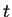
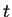

Next: Display Predicted PSTHs Window
Up: Application of the STRFPAK
Previous: Get Datafiles for Prediction
Contents
STRFPAK predicts neuron response by using stimulus which
is provided by the user and the estimated STRF from
above calculation.
Whether estimated Jackknifed
STRF or estimated STRF is used are based on the value
of . The equation is given as:
where the
![$h[i]=[h_0,...,h_{NM-1}]^T$](img59.png) vector is
the linear coefficient describing
the linear estimator and
vector is
the linear coefficient describing
the linear estimator and ![$s_t[i]$](img60.png) are stimulus for prediction.
Both the stimulus and the response are
sampled at particular points in time .
In this stage, STRFPAK also reorganizes multiple trials of
spike trains into two groups and then compute PSTH for each
group. The results of these two PSTHs and predicted PSTH
will be used for later validation.
are stimulus for prediction.
Both the stimulus and the response are
sampled at particular points in time .
In this stage, STRFPAK also reorganizes multiple trials of
spike trains into two groups and then compute PSTH for each
group. The results of these two PSTHs and predicted PSTH
will be used for later validation.
When all calculations are done, small ``Done Prediction''
window appears.
2003-03-19
![\begin{displaymath}\hat{r}[t] = \sum_{i=0}^{MN-1} h[i]s_t[i]\end{displaymath}](img58.png)